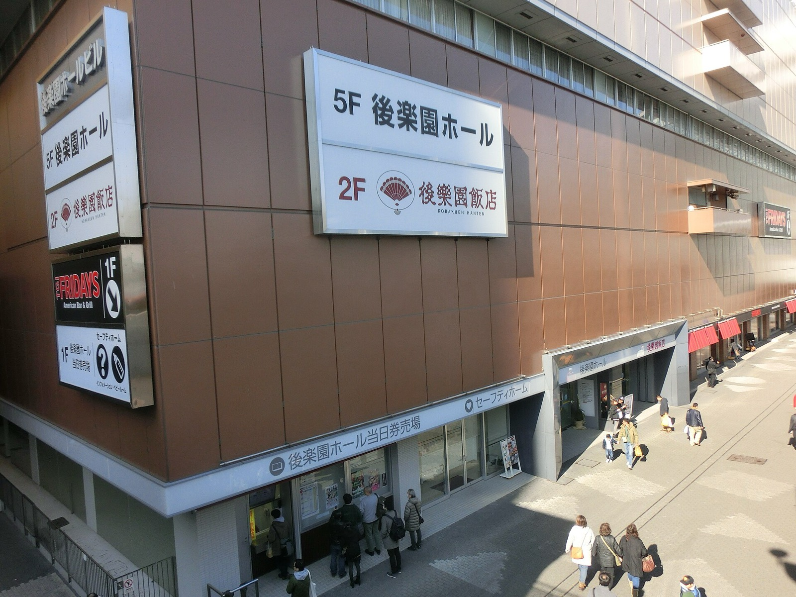

El Desperado si ferma: stenosi spinale, salta la Super Jr. Tag League
El Desperado lascia la Super Jr. Tag League 2026 della New Japan per stenosi del canale spinale ed ernia. Al suo posto, accanto a Místico, c'è il Young Lion Masatora Yasuda.
Foto in copertina: Bject, CC BY-SA 4.0, via Wikimedia Commons
Brutta notizia dal Giappone. El Desperado si ritira dalla Super Jr. Tag League 2026 della New Japan: gli hanno diagnosticato una stenosi del canale spinale e un'ernia.
Doveva fare coppia con Místico del CMLL. Al suo posto ci sarà il Young Lion Masatora Yasuda.
El Desperado, cosa è successo
L'ha spiegato lui stesso in un video. Il problema è iniziato verso marzo con un formicolio vicino al gluteo sinistro. A giugno era già dolore, a volte così forte da svegliarlo di notte.
Ha continuato a lottare con gli antidolorifici, convinto di arrivare a fine anno. Adesso non ce la fa più: la gamba sinistra non ha forza, e non riesce a stare in piedi, camminare o stare seduto dritto a lungo. Ha chiesto scusa ai fan e ha ammesso di aver preso la cosa troppo alla leggera.
Oltre al torneo salta anche Lucha Kingdom, l'evento CMLL x NJPW. Tempi di recupero: nessuno li ha comunicati.
Chi è Masatora Yasuda
Ventisette anni, Young Lion, cioè uno degli allievi della New Japan. L'ha scelto proprio Desperado, perché Místico non tornasse in Messico senza aver fatto niente.
Per Yasuda è il primo torneo vero, esclusa la Young Lion Cup. Se il programma non cambia, debutta sabato 24 ottobre a Saitama contro Kuukai e Master Wato. Che occasione, ragazzi: fare coppia con Místico al primo torneo.
Il mio parere
Ragazzi, El Desperado è uno dei junior più forti al mondo, e lottare per mesi con quel dolore dice tutto del personaggio. Ma la salute viene prima. Che si curi bene, senza fretta.
Il ring presenta sempre il conto, prima o poi. Ne abbiamo parlato anche con la storia di Big Show e le sue gambe.
Lo seguite anche voi il Giappone? Scrivetemelo nei commenti su YouTube. Tutte le notizie del giorno sono in Flash News, e dall'altra parte dell'oceano trovate i risultati di AEW Dynamite.
Fonti: POST Wrestling, Fightful.
Domande frequenti
Perché El Desperado si è ritirato dalla Super Jr. Tag League?
Gli sono state diagnosticate una stenosi del canale spinale e un'ernia. Ha detto di non riuscire a stare in piedi, camminare o stare seduto dritto a lungo per il dolore e l'intorpidimento alla gamba sinistra.
Chi sostituisce El Desperado accanto a Místico?
Il Young Lion Masatora Yasuda, 27 anni, scelto dallo stesso Desperado. È il suo primo torneo New Japan esclusa la Young Lion Cup.